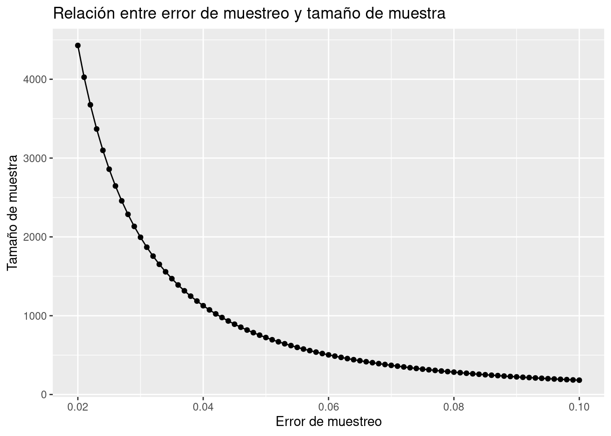

Capítulo 4 Construcción de muestra
4.1 Marco de muestreo
El primer paso consiste en crear un marco de muestreo, el cual es el listado de los posibles elementos a ser seleccionados en la muestra. Tiene la característica de que todos los elementos deben pertenecer a la población objetivo. Este marco de muestreo podría llegar a tener los siguientes 3 errores:
Duplicidad: Existen elementos repetidos
Sobre-representatividad: Existen elementos en el marco que no pertenecen a la población objetivo
Sub-representatividad: Existen elementos pertenecientes a la población objetivo que no se encuentran representados en el marco
Ante estos problemas, es necesario realizar una limpieza de los datos disponibles para obtener un conjunto lo más adecuado para extraer estos problemas. A continuación se muestra el proceso de limpieza a seguir usando el software estadístico R.
library(readr)
library(dplyr)
cnpv <- read_csv("data/conjunto_de_datos_ageb_urbana_09_cpv2020.csv", na = c("", NA, "*"))
cnpv## # A tibble: 68,941 × 230
## ENTIDAD NOM_ENT MUN NOM_MUN LOC NOM_LOC AGEB MZA POBTOT POBFEM POBMAS
## <chr> <chr> <chr> <chr> <chr> <chr> <chr> <chr> <dbl> <dbl> <dbl>
## 1 09 Ciudad … 000 Total … 0000 Total … 0000 000 9.21e6 4.81e6 4.40e6
## 2 09 Ciudad … 002 Azcapo… 0000 Total … 0000 000 4.32e5 2.27e5 2.05e5
## 3 09 Ciudad … 002 Azcapo… 0001 Total … 0000 000 4.32e5 2.27e5 2.05e5
## 4 09 Ciudad … 002 Azcapo… 0001 Total … 0010 000 3.18e3 1.70e3 1.49e3
## 5 09 Ciudad … 002 Azcapo… 0001 Azcapo… 0010 001 1.59e2 8.6 e1 7.3 e1
## 6 09 Ciudad … 002 Azcapo… 0001 Azcapo… 0010 002 1.45e2 8 e1 6.5 e1
## 7 09 Ciudad … 002 Azcapo… 0001 Azcapo… 0010 003 1.24e2 6.4 e1 6 e1
## 8 09 Ciudad … 002 Azcapo… 0001 Azcapo… 0010 004 1.58e2 8.3 e1 7.5 e1
## 9 09 Ciudad … 002 Azcapo… 0001 Azcapo… 0010 005 1.54e2 8.6 e1 6.8 e1
## 10 09 Ciudad … 002 Azcapo… 0001 Azcapo… 0010 006 1.53e2 8.6 e1 6.7 e1
## # … with 68,931 more rows, and 219 more variables: P_0A2 <dbl>, P_0A2_F <dbl>,
## # P_0A2_M <dbl>, P_3YMAS <dbl>, P_3YMAS_F <dbl>, P_3YMAS_M <dbl>,
## # P_5YMAS <dbl>, P_5YMAS_F <dbl>, P_5YMAS_M <dbl>, P_12YMAS <dbl>,
## # P_12YMAS_F <dbl>, P_12YMAS_M <dbl>, P_15YMAS <dbl>, P_15YMAS_F <dbl>,
## # P_15YMAS_M <dbl>, P_18YMAS <dbl>, P_18YMAS_F <dbl>, P_18YMAS_M <dbl>,
## # P_3A5 <dbl>, P_3A5_F <dbl>, P_3A5_M <dbl>, P_6A11 <dbl>, P_6A11_F <dbl>,
## # P_6A11_M <dbl>, P_8A14 <dbl>, P_8A14_F <dbl>, P_8A14_M <dbl>, …Dependiendo de la población objetivo definida por el grupo investigador, será necesario depurar los elementos necesarios. Por ejemplo, si se desea realizar una encuesta exclusivamente en la alcaldía de Gustavo A. Madero en la Ciudad de México, deberemos ejecutar las siguientes instrucciones:
marco <- cnpv %>%
mutate(
VIVPAR_HAB = as.numeric(VIVPAR_HAB),
POBTOT = as.numeric(POBTOT)) %>%
filter(
ENTIDAD == '09',
MUN == '005',
NOM_LOC == "Gustavo A. Madero",
P_18YMAS > 20,
!is.na(VIVPAR_HAB),
VIVPAR_HAB > 10
) %>%
select(ENTIDAD, MUN, NOM_MUN, LOC,
AGEB, MZA, POBTOT, P_18YMAS, VIVPAR_HAB)
marco## # A tibble: 7,344 × 9
## ENTIDAD MUN NOM_MUN LOC AGEB MZA POBTOT P_18YMAS VIVPAR_HAB
## <chr> <chr> <chr> <chr> <chr> <chr> <dbl> <dbl> <dbl>
## 1 09 005 Gustavo A. Madero 0001 0012 001 172 129 46
## 2 09 005 Gustavo A. Madero 0001 0012 002 150 107 43
## 3 09 005 Gustavo A. Madero 0001 0012 003 135 105 50
## 4 09 005 Gustavo A. Madero 0001 0012 004 119 97 45
## 5 09 005 Gustavo A. Madero 0001 0012 005 195 141 61
## 6 09 005 Gustavo A. Madero 0001 0012 006 226 165 62
## 7 09 005 Gustavo A. Madero 0001 0012 007 186 127 49
## 8 09 005 Gustavo A. Madero 0001 0012 008 98 70 36
## 9 09 005 Gustavo A. Madero 0001 0012 010 178 130 48
## 10 09 005 Gustavo A. Madero 0001 0012 011 135 101 44
## # … with 7,334 more rows4.2 Tamaño de muestra
Es imprescindible en una buena estimación conocer el tamaño de muestra adecuado que permitirá controlar o cuantificar el error de muestreo.
Se presenta a continuación la fórmula estadística que permite conocer el tamaño de muestra necesario para lograr con 95% de confianza (\(\alpha\)) un error de muestreo (e). Esta fórmula corresponde se calcula a partir de un diseño de muestreo aleatorio simple, donde la variable de respuesta es categórica:
\[ m=\frac{p(1-p)Z_{1-\alpha/2}^2}{e²}; \] \[n=\frac{m}{1+\frac{m}{N}} \frac{deff}{(1-TNR)}\]
Donde:
N = Es el tamaño de población.
n = Tamaño de muestra.
p = Proporción esperada (50% por default).
\(Z_{1-\alpha/2}\) = Percentil \(\alpha/2\) de la distribución Normal estándar.
e = Error de muestreo máximo a tolerar.
TNR = Tasa de no respuesta
deff = Efecto de diseño (aumento en la varianza por usar un diseño distinto al aleatorio simple)
¡¡ RECORDAR !!
En la medida en que se desea disminuir el error de muestreo, es necesario incrementar de manera exponencial el tamaño de muestra.
Se presenta a continuación una función creada con R (software estadístico) para conocer el tamaño de muestra de una población. Es necesario indicar los parámetros e hipótesis bajo los cuales se realizará dicho cálculo. Posteriormente, se presenta una gráfica que permite conocer el tamaño de muestra de acuerdo con el error de muestreo a tolerar (suponiendo fijos otros parámetros).
4.2.1 Implementación en R
n_muestra <- function(e = 0.04, p = 0.5, alpha = 0.95, N = 100000, deff = 1.5, tnr = 0.10){
m = p*(1-p)*(qnorm(1- (1-alpha)/2)/e)^2
n = ceiling( (m/(1 + m/N)) * deff/(1 - tnr ) )
return(n)
}Ejemplo
Suponiendo un tamaño poblacional de 3 millones de personas, y con 95% de confianza un error máximo a tolerar de 2%, el tamaño de muestra necesario para estimar una proporción es:
n_muestra(e = 0.02, p = 0.5, alpha = 0.95, N = 3000000, deff = 1.7, tnr = 0.05)## [1] 4293En este ejemplo, por practicidad se redondea el tamaño de la muestra a 4,300 unidades. Veamos ahora una gráfica que permita anañizar la relación existente entre el tamaño de muestra y el error de muestreo.
library(dplyr)
library(ggplot2)
tam_muestra <- tibble(error = seq(0.02, 0.1, by = 0.001))
tam_muestra %>%
mutate(n = n_muestra(e = error, p = 0.5, alpha = 0.95, N = 100000, deff = 1.7, tnr = 0.1)) %>%
ggplot(aes(x = error, y = n)) +
geom_line() +
geom_point() +
ggtitle("Relación entre error de muestreo y tamaño de muestra") +
xlab("Error de muestreo") +
ylab("Tamaño de muestra")
Ahora analizaremos la relación existente entre el tamaño de muestra y el tamaño poblacional cuando fijamos el error de muestreo en 3.5%.
tam_muestra <- tibble(N = seq(1, 100000, by = 1000))
tam_muestra %>%
mutate(n = n_muestra(e = 0.035, N = N)) %>%
ggplot(aes(x = N, y = n)) +
geom_line() +
geom_point() +
scale_y_continuous(limits = c(0, 1500), breaks = seq(0, 1500, by = 100)) +
ggtitle("Relación entre tamaño de población y tamaño de muestra") +
xlab("Tamaño de población") +
ylab("Tamaño de muestra")
Se puede apreciar que a mayor tamaño de población es necesario una muestra más grande, sin embargo, no es un comportamiento lineal. Debido a que una de las condiciones de muestreo es que la selección es aleatoria, existe un punto de saturación de información, en donde no se necesita aumentar más el tamaño de muestra (aunque el tamaño de la población siga creciendo)
¡¡ RECORDAR !!
Para lograr estimaciones representativas de ALTA calidad sobre la población, es indispensable realizar un buen diseño de muestreo, de lo contrario los resultados pueden estar sesgados.
EJERCICIO
Realizar el cálculo del tamaño de muestra necesario para los siguientes escenarios:
Encuesta de opinión a los alumnos de este grupo de clases
Encuesta Nacional a población de 18 años y más
Encuesta en alcaldía de Gustavo A. Madero en CDMX a personas de 12 años y más
Calculemos distintos posibles tamaños de muestra que consideren diversos escenarios en cuanto al error máximo a tolerar para nuestras estimaciones. Suponga además que el costo obtención de cada cuestionario tiene un precio alrededor de $270.00 + IVA y que cuenta con un presupuesto de $645,000.00
marco %>%
summarise(
viv = sum(VIVPAR_HAB, na.rm = T),
pob = sum(P_18YMAS, na.rm = T)
)## # A tibble: 1 × 2
## viv pob
## <dbl> <dbl>
## 1 326619 886279n_muestra(e = 0.06, p = 0.5, alpha = 0.95, N = 886279, deff = 1.7, tnr = 0.1)## [1] 504n_muestra(e = 0.05, p = 0.5, alpha = 0.95, N = 886279, deff = 1.7, tnr = 0.1)## [1] 726n_muestra(e = 0.04, p = 0.5, alpha = 0.95, N = 886279, deff = 1.7, tnr = 0.1)## [1] 1133n_muestra(e = 0.03, p = 0.5, alpha = 0.95, N = 886279, deff = 1.7, tnr = 0.1)## [1] 2014n_muestra(e = 0.02, p = 0.5, alpha = 0.95, N = 886279, deff = 1.7, tnr = 0.1)## [1] 4523EJERCICIO
¿Cuál sería el tamaño de muestra que elegirías para el estudio?
Considera en tu ejercicio todos los gastos de honorarios que deben ser cubiertos a tu equipo de trabajo y haz una propuesta técnica y económica
4.3 Distribución muestral
Una vez que el tamaño de muestra ha sido calculado, es común que se proceda a distribuirla de una manera estratégica que permita recolectar de manera óptima la información necesaria. Existe distintos tipos de distribución (afijación), las cuales dependen de que existan estratos (grupos) de la población sobre los cuales se desea distribuir la muestra. Entre las más comunes, se encuentran:
- Afijación simple: En este tipo de afijación, la muestra se distribuye de manera igualitaria entre los distintos grupos. La fórmula es la siguiente:
\[n_h=\frac{n}{L}\] Donde:
\(n_h=\) Es el tamaño de muestra en el h-ésimo estrato
\(n=\) Es el tamaño de muestra total
\(L=\) Es el número de estratos
- Afijación proporcional: Posiblemente es el tipo de afijación más usado. Esta estrategia se usa para distribuir la muestra de manera proporcional a una característica. Por regla general, se distribuye de acuerdo con la distribución poblacional (viviendas o personas) en zonas geográficas. La fórmula es la siguiente:
\[n_h = \frac{P_h}{P} \cdot n\]
Donde:
\(n_h=\) Es el tamaño de muestra ajustado en el h-ésimo estrato
\(n=\) Es el tamaño de muestra global
\(P_h=\) Es la población en el h-ésimo estrato
\(P=\) Es la población total
4.3.1 Implementación en R
Suponga por un momento que contamos con una característica particular de interés en la que podemos clasificar a la población de manzanas, puede ser el ámbito (rural vs urbano) o alguna otra clasificación de interés.
Para fines prácticos, clasificaremos las manzanas dependiendo del número de viviendas particulares habitadas. La clasificación es la siguiente:
Estrato 1: 0-25 viviendas
Estrato 2: 26-35 viviendas
Estrato 3: 36-55 viviendas
Estrato 4: 56 o más viviendas
marco <- marco %>%
mutate(estrato = case_when(
VIVPAR_HAB <= 35 ~ "gpo1",
VIVPAR_HAB <= 55 ~ "gpo2",
VIVPAR_HAB <= 80 ~ "gpo3",
TRUE ~ "gpo4",
)) %>%
arrange(estrato) %>%
mutate(ID_unit = 1:nrow(marco))
marco## # A tibble: 7,344 × 11
## ENTIDAD MUN NOM_MUN LOC AGEB MZA POBTOT P_18YMAS VIVPAR_HAB estrato
## <chr> <chr> <chr> <chr> <chr> <chr> <dbl> <dbl> <dbl> <chr>
## 1 09 005 Gustavo A… 0001 0012 012 98 77 32 gpo1
## 2 09 005 Gustavo A… 0001 0012 018 83 62 32 gpo1
## 3 09 005 Gustavo A… 0001 0012 024 98 71 20 gpo1
## 4 09 005 Gustavo A… 0001 0012 025 144 107 26 gpo1
## 5 09 005 Gustavo A… 0001 0012 026 83 64 21 gpo1
## 6 09 005 Gustavo A… 0001 0012 035 98 69 27 gpo1
## 7 09 005 Gustavo A… 0001 0012 036 107 82 35 gpo1
## 8 09 005 Gustavo A… 0001 0012 037 43 32 14 gpo1
## 9 09 005 Gustavo A… 0001 0027 001 145 112 32 gpo1
## 10 09 005 Gustavo A… 0001 0027 004 88 71 26 gpo1
## # … with 7,334 more rows, and 1 more variable: ID_unit <int>pob_estrato <- marco %>%
group_by(estrato) %>%
summarise(
n = n(),
pob = sum(P_18YMAS, na.rm = T),
viv = sum(VIVPAR_HAB, na.rm = T)
)
pob_estrato## # A tibble: 4 × 4
## estrato n pob viv
## <chr> <int> <dbl> <dbl>
## 1 gpo1 3545 228196 81666
## 2 gpo2 2059 251101 91323
## 3 gpo3 1069 190801 70584
## 4 gpo4 671 216181 83046Suponiendo que el tamaño de muestra seleccionado es de 2,000 individuos y se desea hacer una afijación proporcional, el tamaño de muestra en cada estrato queda asignado de la siguiente forma:
distribucion <- pob_estrato %>%
mutate(
prop = viv/sum(viv),
n_h = round(prop * 2000)
)
distribucion## # A tibble: 4 × 6
## estrato n pob viv prop n_h
## <chr> <int> <dbl> <dbl> <dbl> <dbl>
## 1 gpo1 3545 228196 81666 0.250 500
## 2 gpo2 2059 251101 91323 0.280 559
## 3 gpo3 1069 190801 70584 0.216 432
## 4 gpo4 671 216181 83046 0.254 509Una práctica muy común es redondear la muestra elegida en cada estrato de forma que sean número múltiplos de 5 o 10 los que definan el tamaño final de muestra en cada estrato. Existen múltiples formas de realizar estos ajustes. Usaremos un redondeo simple para determinar el tamaño de muetsra final en cada estrato.
distribucion <- distribucion %>%
mutate(nh_aj = round(n_h/10)*10)
distribucion## # A tibble: 4 × 7
## estrato n pob viv prop n_h nh_aj
## <chr> <int> <dbl> <dbl> <dbl> <dbl> <dbl>
## 1 gpo1 3545 228196 81666 0.250 500 500
## 2 gpo2 2059 251101 91323 0.280 559 560
## 3 gpo3 1069 190801 70584 0.216 432 430
## 4 gpo4 671 216181 83046 0.254 509 510De esta forma, el tamaño final de la muestra será de 2000 unidades.
4.4 Probabilidades y Factores
Dependiendo del diseño de muestreo implementado, a cada unidad se le deberá asignar una probabilidad de ser incluída en la muestra. Entre las más comunes se encuentran:
4.4.1 Probabilidades
- Muestreo Aleatorio Simple con reemplazo: Ocurre cuando SÍ se realiza reemplazo de la muestra y un elemento puede ser seleccionado una o más veces.
\[\pi_k=1-(\frac{N-1}{N})^n\]
- Muestreo Aleatorio Simple sin reemplazo: Ocurre cuando NO se realiza reemplazo de la muestra y un elemento es seleccionado una sola vez.
\[\pi_k=\frac{n}{N}\]
- Muestreo con probabilidad PPT: La probabilidad con la que un individuo es seleccionado es proporcional a una característica de interés:
\[\pi_k=n\frac{X_k}{\sum_{i=1}^N{X_k}}\]
Cuando se trata de un muestreo polietápico, cada una de las etapas tiene su propia probabilidad y factor de expansión asociado. Debido a que el muestreo se realiza de manera independiente en cada etapa, tanto la probabilidad de inclusión final como el factor de expansión se calcula mediante la multiplicación de cada una de las etapas que conforman el muestreo.
\[\pi_k=\pi_{upm} \cdot \pi_{usm} \cdot ... \cdot \pi_{uum}\]
4.4.2 Factor de expansión
El factor de expansión se refiere al número de individuos fuera de la muestra que son representados por cada uno de los individuos incluídos dentro de la muestra, Este factor es calculado para cada elemento muestral. Matemáticamente, este cálculo se realiza a través del inverso de probabilidad de selección:
\[F_k=\frac{1}{\pi_k}\]
En R realizaremos automáticamente el cálculo de la probabilidad de inclusión y posteriormente invertiremos esta probabilidad para extraer el factor de expansión.
4.5 Extracción de muestra
Una vez definido el diseño de muestreo y tamaño de muestra, procedemos a extraer nuestra muestra de acuerdo con el diseño determinado. En esta sección probaremos múltiples formas de extraer la muestra final
4.5.1 MAS sin remplazo
El muestreo aleatorio simple sin reemplazo es uno de los más simples de implementar. Es necesario contar con la librería sampling para poder hacer uso de las funciones necesarias.
library(tidyverse)library(sampling)
set.seed(310308261)
muestra_1 <- strata(
data = marco,
stratanames = NULL,
size = 2000,
method = "srswor",
description = TRUE
) %>%
as_tibble()##
## Population total and number of selected units: 7344 2000muestra_1## # A tibble: 2,000 × 2
## ID_unit Prob
## <int> <dbl>
## 1 7 0.272
## 2 8 0.272
## 3 9 0.272
## 4 13 0.272
## 5 14 0.272
## 6 16 0.272
## 7 17 0.272
## 8 18 0.272
## 9 27 0.272
## 10 28 0.272
## # … with 1,990 more rowsmuestra_ponde_1 <- marco %>%
filter(ID_unit %in% muestra_1$ID_unit) %>%
left_join(muestra_1, by = "ID_unit") %>%
mutate(factor = 1/Prob)
glimpse(muestra_ponde_1)## Rows: 2,000
## Columns: 13
## $ ENTIDAD <chr> "09", "09", "09", "09", "09", "09", "09", "09", "09", "09",…
## $ MUN <chr> "005", "005", "005", "005", "005", "005", "005", "005", "00…
## $ NOM_MUN <chr> "Gustavo A. Madero", "Gustavo A. Madero", "Gustavo A. Mader…
## $ LOC <chr> "0001", "0001", "0001", "0001", "0001", "0001", "0001", "00…
## $ AGEB <chr> "0012", "0012", "0027", "0027", "0027", "0027", "0027", "00…
## $ MZA <chr> "036", "037", "001", "017", "018", "020", "021", "023", "03…
## $ POBTOT <dbl> 107, 43, 145, 45, 100, 111, 108, 90, 68, 121, 110, 102, 48,…
## $ P_18YMAS <dbl> 82, 32, 112, 35, 71, 84, 80, 68, 48, 86, 80, 71, 27, 48, 28…
## $ VIVPAR_HAB <dbl> 35, 14, 32, 11, 33, 25, 32, 32, 22, 34, 28, 34, 13, 14, 11,…
## $ estrato <chr> "gpo1", "gpo1", "gpo1", "gpo1", "gpo1", "gpo1", "gpo1", "gp…
## $ ID_unit <int> 7, 8, 9, 13, 14, 16, 17, 18, 27, 28, 31, 37, 38, 39, 41, 46…
## $ Prob <dbl> 0.2723312, 0.2723312, 0.2723312, 0.2723312, 0.2723312, 0.27…
## $ factor <dbl> 3.672, 3.672, 3.672, 3.672, 3.672, 3.672, 3.672, 3.672, 3.6…4.5.2 MAS con remplazo
El muestreo aleatorio simple con reemplazo es ampliamante usado en las primeras etapas de muestreo, pues una localidad puedes ser seleccionada múltiples veces sin que ponga en riesgo obtener observaciones duplicadas. Cuando esto sucede, se toman elementos muestrales distintos en las etapas sucesivas. La implementación en R queda de la siguiente forma:
set.seed(159753)
muestra_2 <- strata(
data = marco,
stratanames = NULL,
size = 2000,
method = "srswr",
description = TRUE
) %>%
as_tibble()##
## Population total and number of selected units: 7344 2000Observemos cuántas unidades fueron seleccionadas más de una vez:
muestra_2## # A tibble: 1,733 × 3
## ID_unit Replicates Prob
## <int> <int> <dbl>
## 1 4 2 0.238
## 2 13 1 0.238
## 3 14 1 0.238
## 4 18 1 0.238
## 5 20 2 0.238
## 6 24 1 0.238
## 7 32 2 0.238
## 8 33 2 0.238
## 9 36 1 0.238
## 10 37 1 0.238
## # … with 1,723 more rowsEn esta etapa deberá tenerse presente el factor de expansión asociado a cada unidad de muestreo. Esta primer etapa del cálculo del factor de expansión lo hace R automáticamente:
muestra_ponde_2 <- marco %>%
filter(ID_unit %in% muestra_2$ID_unit) %>%
left_join(muestra_2, by = "ID_unit") %>%
mutate(factor = 1/Prob)
glimpse(muestra_ponde_2)## Rows: 1,733
## Columns: 14
## $ ENTIDAD <chr> "09", "09", "09", "09", "09", "09", "09", "09", "09", "09",…
## $ MUN <chr> "005", "005", "005", "005", "005", "005", "005", "005", "00…
## $ NOM_MUN <chr> "Gustavo A. Madero", "Gustavo A. Madero", "Gustavo A. Mader…
## $ LOC <chr> "0001", "0001", "0001", "0001", "0001", "0001", "0001", "00…
## $ AGEB <chr> "0012", "0027", "0027", "0027", "0027", "0027", "0050", "00…
## $ MZA <chr> "025", "017", "018", "023", "025", "031", "006", "017", "02…
## $ POBTOT <dbl> 144, 45, 100, 90, 107, 72, 80, 60, 73, 102, 60, 88, 69, 77,…
## $ P_18YMAS <dbl> 107, 35, 71, 68, 85, 49, 56, 50, 50, 71, 36, 61, 49, 59, 48…
## $ VIVPAR_HAB <dbl> 26, 11, 33, 32, 29, 22, 24, 19, 16, 34, 14, 26, 17, 18, 20,…
## $ estrato <chr> "gpo1", "gpo1", "gpo1", "gpo1", "gpo1", "gpo1", "gpo1", "gp…
## $ ID_unit <int> 4, 13, 14, 18, 20, 24, 32, 33, 36, 37, 42, 46, 47, 48, 59, …
## $ Replicates <int> 2, 1, 1, 1, 2, 1, 2, 2, 1, 1, 2, 1, 1, 1, 2, 1, 1, 2, 1, 1,…
## $ Prob <dbl> 0.2384121, 0.2384121, 0.2384121, 0.2384121, 0.2384121, 0.23…
## $ factor <dbl> 4.194418, 4.194418, 4.194418, 4.194418, 4.194418, 4.194418,…4.5.3 Muestreo PPT
Recurrimos al muestreo con probabilidad proporcional al tamaño de la población cuando deseamos extraer una muestra con probabilidades desiguales que dependen de nuestro interés por observar ciertas unidades particulares. A continuación se muestra su implementación en R:
set.seed(19573)
muestra_est <- strata(
data = marco,
stratanames = NULL,
size = 2000,
method = "systematic",
pik = marco$VIVPAR_HAB,
description = TRUE
)##
## Population total and number of selected units: 7344 2000muestra_est_pond <- marco %>%
filter(ID_unit %in% muestra_est$ID_unit) %>%
left_join(muestra_est, by = "ID_unit") %>%
mutate(factor = 1/Prob)
glimpse(muestra_est_pond)## Rows: 2,000
## Columns: 13
## $ ENTIDAD <chr> "09", "09", "09", "09", "09", "09", "09", "09", "09", "09",…
## $ MUN <chr> "005", "005", "005", "005", "005", "005", "005", "005", "00…
## $ NOM_MUN <chr> "Gustavo A. Madero", "Gustavo A. Madero", "Gustavo A. Mader…
## $ LOC <chr> "0001", "0001", "0001", "0001", "0001", "0001", "0001", "00…
## $ AGEB <chr> "0012", "0012", "0027", "0027", "0027", "0050", "0050", "00…
## $ MZA <chr> "012", "036", "018", "024", "031", "002", "052", "068", "00…
## $ POBTOT <dbl> 98, 107, 100, 90, 72, 110, 48, 69, 117, 77, 117, 150, 118, …
## $ P_18YMAS <dbl> 77, 82, 71, 62, 49, 80, 27, 49, 94, 59, 82, 118, 88, 59, 96…
## $ VIVPAR_HAB <dbl> 32, 35, 33, 30, 22, 28, 13, 17, 31, 25, 32, 34, 32, 29, 33,…
## $ estrato <chr> "gpo1", "gpo1", "gpo1", "gpo1", "gpo1", "gpo1", "gpo1", "gp…
## $ ID_unit <int> 1, 7, 14, 19, 24, 31, 38, 47, 54, 60, 67, 73, 79, 85, 90, 9…
## $ Prob <dbl> 0.20111717, 0.21997191, 0.20740208, 0.18854735, 0.13826806,…
## $ factor <dbl> 4.972226, 4.546035, 4.821552, 5.303708, 7.232329, 5.682544,…4.5.4 Muestreo estratificado y PPT
Este tipo de muestreo implica la creación previa de estratos y sus respectivas distribución por algunos de los métodos antes estudiados. Es importante mencionar que las funciones usadas para este tipo de muestreo implican que las unidades muestrales se encuentran ordenadas por estrato de modo que todos los elementos pertenecientes a un mismo estrato se encuentran juntos.
set.seed(13258)
muestra_estratificada <- strata(
data = marco,
stratanames = "estrato",
size = c(500, 560, 430, 510),
method = "systematic",
pik = marco$VIVPAR_HAB,
description = TRUE
)## Stratum 1
##
## Population total and number of selected units: 3545 500
## Stratum 2
##
## Population total and number of selected units: 2059 560
## Stratum 3
##
## Population total and number of selected units: 1069 430
## Stratum 4
##
## Population total and number of selected units: 671 510
## Number of strata 4
## Total number of selected units 2000muestra_estratificada_ppt <- marco %>%
filter(ID_unit %in% muestra_estratificada$ID_unit) %>%
left_join(muestra_estratificada, by = c("ID_unit", "estrato")) %>%
mutate(factor = 1/Prob)
glimpse(muestra_estratificada_ppt)## Rows: 2,000
## Columns: 14
## $ ENTIDAD <chr> "09", "09", "09", "09", "09", "09", "09", "09", "09", "09",…
## $ MUN <chr> "005", "005", "005", "005", "005", "005", "005", "005", "00…
## $ NOM_MUN <chr> "Gustavo A. Madero", "Gustavo A. Madero", "Gustavo A. Mader…
## $ LOC <chr> "0001", "0001", "0001", "0001", "0001", "0001", "0001", "00…
## $ AGEB <chr> "0012", "0027", "0027", "0027", "0027", "0050", "0050", "00…
## $ MZA <chr> "024", "001", "019", "026", "036", "019", "064", "004", "01…
## $ POBTOT <dbl> 98, 145, 122, 116, 68, 51, 137, 56, 100, 119, 103, 114, 92,…
## $ P_18YMAS <dbl> 71, 112, 83, 86, 48, 38, 95, 44, 73, 84, 78, 76, 68, 94, 51…
## $ VIVPAR_HAB <dbl> 20, 32, 29, 33, 22, 16, 30, 19, 19, 33, 29, 30, 27, 34, 20,…
## $ estrato <chr> "gpo1", "gpo1", "gpo1", "gpo1", "gpo1", "gpo1", "gpo1", "gp…
## $ ID_unit <int> 3, 9, 15, 21, 27, 34, 44, 51, 57, 65, 71, 77, 82, 89, 95, 1…
## $ Prob <dbl> 0.12244998, 0.19591997, 0.17755247, 0.20204247, 0.13469498,…
## $ Stratum <int> 1, 1, 1, 1, 1, 1, 1, 1, 1, 1, 1, 1, 1, 1, 1, 1, 1, 1, 1, 1,…
## $ factor <dbl> 8.166600, 5.104125, 5.632138, 4.949455, 7.424182, 10.208250…Finalmente… para extraer estos resultados en un archivo manipulable por nosotros u otras personas, hacemos uso de la función write.csv(), la cual nos permitirá almacenar nuestra muestra en formato de excel con extensión .csv:
write.csv(muestra_estratificada_ppt, "data/muestra_estratificada.csv", row.names = F)